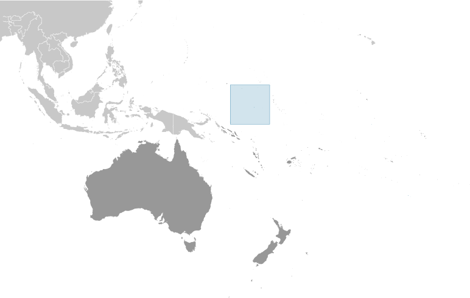
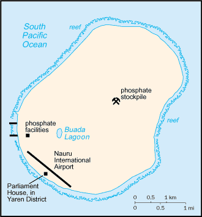
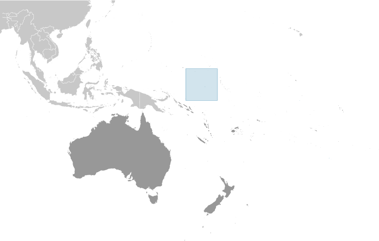
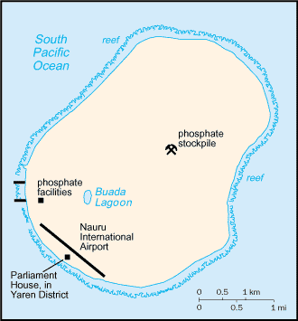

Australia-Oceania :: NAURU
Introduction :: NAURU
-
The exact origins of the Nauruans are unclear since their language does not resemble any other in the Pacific region. Germany annexed the island in 1888. A German-British consortium began mining the island's phosphate deposits early in the 20th century. Australian forces occupied Nauru in World War I; it subsequently became a League of Nations mandate. After the Second World War - and a brutal occupation by Japan - Nauru became a UN trust territory. It achieved independence in 1968 and joined the UN in 1999 as the world's smallest independent republic.
Geography :: NAURU
-
Oceania, island in the South Pacific Ocean, south of the Marshall Islands0 32 S, 166 55 EOceaniatotal: 21 sq kmland: 21 sq kmwater: 0 sq kmcountry comparison to the world: 242about 0.1 times the size of Washington, DC0 km30 kmterritorial sea: 12 nmcontiguous zone: 24 nmexclusive economic zone: 200 nmtropical with a monsoonal pattern; rainy season (November to February)sandy beach rises to fertile ring around raised coral reefs with phosphate plateau in centermean elevation: NAelevation extremes: lowest point: Pacific Ocean 0 mhighest point: Command Ridge 70 mphosphates, fishagricultural land: 20%arable land 0%; permanent crops 20%; permanent pasture 0%forest: 0%other: 80% (2011 est.)0 sq km (2012)extensive phosphate mining made approximately 90% of the island unsuitable for farming; most people live in the fertile coastal areas, especially along the southwest coastperiodic droughtslimited natural freshwater resources, roof storage tanks collect rainwater but mostly dependent on a single, aging desalination plant; a century of intensive phosphate mining beginning in 1906 - mainly by a UK, Australia, and NZ consortium - left the central 90% of Nauru a wasteland and threatens limited remaining land resourcesparty to: Biodiversity, Climate Change, Climate Change-Kyoto Protocol, Desertification, Hazardous Wastes, Law of the Sea, Marine Dumping, Ozone Layer Protection, Whalingsigned, but not ratified: none of the selected agreementsworld's smallest island country; situated just 53 km south of the Equator; Nauru is one of the three great phosphate rock islands in the Pacific Ocean - the others are Banaba (Ocean Island) in Kiribati and Makatea in French Polynesia
People and Society :: NAURU
-
9,642 (July 2017 est.)country comparison to the world: 223noun: Nauruan(s)adjective: NauruanNauruan 58%, other Pacific Islander 26%, Chinese 8%, European 8%Nauruan 93% (official, a distinct Pacific Island language), English 2% (widely understood, spoken, and used for most government and commercial purposes), other 5% (includes I-Kiribati 2% and Chinese 2%)note: percentages represent main language spoken at home; Nauruan is spoken by 95% of the population, English by 66%, and other languages by 12% (2011 est.)Protestant 60.4% (includes Nauru Congregational 35.7%, Assembly of God 13%, Nauru Independent Church 9.5%, Baptist 1.5%, and Seventh Day Adventist 0.7%), Roman Catholic 33%, other 3.7%, none 1.8%, unspecified 1.1% (2011 est.)0-14 years: 31.4% (male 1,323/female 1,705)15-24 years: 16.21% (male 766/female 797)25-54 years: 43.4% (male 2,112/female 2,073)55-64 years: 6.38% (male 240/female 375)65 years and over: 2.6% (male 96/female 155) (2017 est.)total: 26.4 yearsmale: 27 yearsfemale: 25.7 years (2017 est.)country comparison to the world: 1490.53% (2017 est.)country comparison to the world: 15924 births/1,000 population (2017 est.)country comparison to the world: 565.9 deaths/1,000 population (2017 est.)country comparison to the world: 169-12.8 migrant(s)/1,000 population (2017 est.)country comparison to the world: 215extensive phosphate mining made approximately 90% of the island unsuitable for farming; most people live in the fertile coastal areas, especially along the southwest coasturban population: 100% of total population (2017)rate of urbanization: 0.62% annual rate of change (2015-20 est.)at birth: 0.83 male(s)/female0-14 years: 0.77 male(s)/female15-24 years: 1.02 male(s)/female25-54 years: 1.01 male(s)/female55-64 years: 0.64 male(s)/female65 years and over: 0.63 male(s)/femaletotal population: 0.89 male(s)/female (2016 est.)22.1 yearsnote: median age at first birth among women 25-29 (2007 est.)total: 7.8 deaths/1,000 live birthsmale: 10 deaths/1,000 live birthsfemale: 6 deaths/1,000 live births (2017 est.)country comparison to the world: 157total population: 67.4 yearsmale: 63.3 yearsfemale: 70.9 years (2017 est.)country comparison to the world: 1702.8 children born/woman (2017 est.)country comparison to the world: 6235.6% (2007)3.3% of GDP (2014)country comparison to the world: 1791 physicians/1,000 population (2010)5 beds/1,000 population (2010)improved:urban: 96.5% of populationtotal: 96.5% of populationunimproved:urban: 3.5% of populationtotal: 3.5% of population (2015 est.)improved:urban: 65.6% of populationtotal: 65.6% of populationunimproved:urban: 34.4% of populationtotal: 34.4% of population (2015 est.)NANANA61% (2016)country comparison to the world: 14.8% (2007)country comparison to the world: 91NAtotal: 9 yearsmale: 9 yearsfemale: 10 years (2008)
Government :: NAURU
-
conventional long form: Republic of Nauruconventional short form: Naurulocal long form: Republic of Naurulocal short form: Nauruformer: Pleasant Islandetymology: the island name may derive from the Nauruan word "anaoero" meaning "I go to the beach"parliamentary republicno official capital; government offices in Yaren Districttime difference: UTC+12 (17 hours ahead of Washington, DC, during Standard Time)14 districts; Aiwo, Anabar, Anetan, Anibare, Baitsi, Boe, Buada, Denigomodu, Ewa, Ijuw, Meneng, Nibok, Uaboe, Yaren31 January 1968 (from the Australia-, NZ-, and UK-administered UN trusteeship)Independence Day, 31 January (1968)effective 29 January 1968; amended 1968, 2009, 2014 (2016)mixed legal system of common law based on the English model and customary lawhas not submitted an ICJ jurisdiction declaration; accepts ICCt jurisdiction20 years of age; universal and compulsorychief of state: President Baron WAQA (since 11 June 2013); note - the president is both chief of state and head of governmenthead of government: President Baron WAQA (since 11 June 2013)cabinet: Cabinet appointed by the president from among members of Parliamentelections/appointments: president indirectly elected by Parliament (eligible for a second term); election last held on 11 June 2013 (next to be held in 2016)election results: Baron WAQA reelected president on 11 June 2013; Parliament vote - Baron WAQA (independent) 13, Roland KUN (Nauru First) 5description: unicameral parliament (19 seats; members directly elected in multi-seat constituencies by majority vote using the "Dowdall" counting system by which voters rank candidates on their ballots; members serve 3-year terms)elections: last held on 9 July 2016 (next to be held in 2019)election results: percent of vote - NA; seats - independent 19highest court(s): Supreme Court (consists of a chief justice and 1 judge)judge selection and term of office: judges appointed by the president to serve until age 65subordinate courts: District Court, Family CourtDemocratic Party [Kennan ADEANG]Nauru First (Naoero Amo) PartyNauru Party (informal)note: loose multiparty systemWoman Information and News Agency (women's issues)ACP, ADB, AOSIS, C, FAO, G-77, ICAO, ICCt, IFAD, Interpol, IOC, IOM, ITU, OPCW, PIF, Sparteca, SPC, UN, UNCTAD, UNESCO, UPU, WHOchief of mission: Ambassador Marlene Inemwin MOSES (since 13 March 2006)chancery: 800 2nd Avenue, Suite 400 D, New York, NY 10017telephone: [1] (212) 937-0074FAX: [1] (212) 937-0079the US does not have an embassy in Nauru; the US Ambassador to Fiji is accredited to Naurublue with a narrow, horizontal, gold stripe across the center and a large white 12-pointed star below the stripe on the hoist side; blue stands for the Pacific Ocean, the star indicates the country's location in relation to the Equator (the gold stripe) and the 12 points symbolize the 12 original tribes of Nauru; the white star color represents phosphate, the basis of the island's wealthfrigatebird, calophyllum flower; national colors: blue, yellow, whitename: "Nauru Bwiema" (Song of Nauru)lyrics/music: Margaret HENDRIE/Laurence Henry HICKSnote: adopted 1968
Economy :: NAURU
-
Revenues of this tiny island - a coral atoll with a land area of 21 square kilometers - traditionally have come from exports of phosphates. Few other resources exist, with most necessities being imported, mainly from Australia, its former occupier and later major source of support. Primary reserves of phosphates were exhausted and mining ceased in 2006, but mining of a deeper layer of "secondary phosphate" in the interior of the island began the following year. The secondary phosphate deposits may last another 30 years. Earnings from Nauru’s export of phosphate remains an important source of income. Few comprehensive statistics on the Nauru economy exist; estimates of Nauru's GDP vary widely.The rehabilitation of mined land and the replacement of income from phosphates are serious long-term problems. In anticipation of the exhaustion of Nauru's phosphate deposits, substantial amounts of phosphate income were invested in trust funds to help cushion the transition and provide for Nauru's economic future.Although revenue sources for government are limited, the opening of the Australian Regional Processing Center for asylum seekers since 2012 has sparked growth in the economy. Revenue derived from fishing licenses under the "vessel day scheme" has also boosted government income. Housing, hospitals, and other capital plant are deteriorating. The cost to Australia of keeping the Nauruan government and economy afloat continues to climb.$151 million (2016 est.)$135 million (2015 est.)$130 million (2014 est.)note: data are in 2015 dollarscountry comparison to the world: 223$102 million (2015 est.)10.4% (2016 est.)2.8% (2015 est.)36.5% (2014 est.)country comparison to the world: 2$11,600 (2016 est.)$11,400 (2015 est.)$11,100 (2014 est.)note: data are in 2015 US dollarscountry comparison to the world: 130agriculture: 6.1%industry: 33%services: 60.8% (2009 est.)coconutsphosphate mining, offshore banking, coconut productsNA%NAnote: most of the labor force is employed in phosphate mining, public administration, education, and transportation23% (2011 est.)90% (2004 est.)country comparison to the world: 190NA%lowest 10%: NA%highest 10%: NA%revenues: $57.8 millionexpenditures: $51.8 million (2010 est.)65% of GDP (2016 est.)77.7% of GDP (2015 est.)country comparison to the world: 601 July - 30 June8.2% (2016 est.)9.8% (2016 est.)country comparison to the world: 197$2 million (2016 est.)$-10 million (2015 est.)country comparison to the world: 58$125 million (2013 est.)$110.3 million (2012 est.)country comparison to the world: 192phosphatesNigeria 45.5%, Australia 13.7%, Japan 13%, South Korea 11.1%, NZ 8.7% (2016)$143.1 million (2013 est.)$41.2 million (2012 est.)country comparison to the world: 211food, fuel, manufactures, building materials, machineryAustralia 71.9%, Fiji 8.1%, Japan 4.4% (2016)$33.3 million (2004 est.)country comparison to the world: 199Australian dollars (AUD) per US dollar -1.3442 (2016 est.)1.3452 (2015 est.)1.3291 (2014 est.)1.1094 (2013 est.)0.9695 (2012 est.)
Energy :: NAURU
-
25 million kWh (2015 est.)country comparison to the world: 21123.25 million kWh (2015 est.)country comparison to the world: 2100 kWh (2016 est.)country comparison to the world: 1790 kWh (2016 est.)country comparison to the world: 1825,000 kW (2015 est.)country comparison to the world: 213100% of total installed capacity (2015 est.)country comparison to the world: 150% of total installed capacity (2015 est.)country comparison to the world: 1570% of total installed capacity (2015 est.)country comparison to the world: 19420% of total installed capacity (2015 est.)country comparison to the world: 300 bbl/day (2016 est.)country comparison to the world: 1790 bbl/day (2014 est.)country comparison to the world: 1720 bbl/day (2014 est.)country comparison to the world: 1730 bbl (1 January 2017 es)country comparison to the world: 1770 bbl/day (2014 est.)country comparison to the world: 184400 bbl/day (2015 est.)country comparison to the world: 2110 bbl/day (2014 est.)country comparison to the world: 187394.8 bbl/day (2014 est.)country comparison to the world: 2080 cu m (2013 est.)country comparison to the world: 1790 cu m (2013 est.)country comparison to the world: 1180 cu m (2013 est.)country comparison to the world: 1600 cu m (2013 est.)country comparison to the world: 1680 cu m (1 January 2014 es)country comparison to the world: 181200,000 Mt (2013 est.)country comparison to the world: 202
Communications :: NAURU
-
total subscriptions: 1,900subscriptions per 100 inhabitants: 14 (July 2016 est.)country comparison to the world: 218total: 9,900subscriptions per 100 inhabitants: 103 (July 2016 est.)country comparison to the world: 214general assessment: adequate local and international radiotelephone communication provided via Australian facilitiesinternational: country code - 674; satellite earth station - 1 Intelsat (Pacific Ocean)1 government-owned TV station broadcasting programs from New Zealand sent via satellite or on videotape; 1 government-owned radio station, broadcasting on AM and FM, utilizes Australian and British programs (2009).nrtotal: 5,100percent of population: 53.5% (July 2016 est.)
Transportation :: NAURU
-
number of registered air carriers: 1inventory of registered aircraft operated by air carriers: 5annual passenger traffic on registered air carriers: 38,858annual freight traffic on registered air carriers: 7,793,474 mt-km (2015)C2 (2016)1 (2013)country comparison to the world: 227total: 11,524 to 2,437 m: 1 (2017)total: 30 kmpaved: 24 kmunpaved: 6 km (2002)country comparison to the world: 220major seaport(s): Nauru
Military and Security :: NAURU
-
no regular military forces (2012)Nauru maintains no defense forces; under an informal agreement, defense is the responsibility of Australia
Transnational Issues :: NAURU
-
none